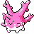

#201
Corsola
WaterRock
HustleBoosts Attack, but lowers accuracy.
Natural CureSwitch-outs heal status problems.
RegeneratorHidden abilityRestores HP when withdrawn.
Base stats Total 465
HP65
Attack45
Defense115
Speed35
Sp. Atk90
Sp. Def115
Evolution
Does not evolve.
Training & breeding
- Catch rate
- 60 / 255
- Base experience
- 144
- Wild held items
- None
- Gender ratio
- 25% male, 75% female
- Egg groups
- Water 1, Water 3
- Hatch time
- 20 egg cycles (~5,120 steps)
- Growth rate
- Fast
Level-up moves
LevelMoveTypeCat.PowerAcc.
TM / HM moves 23
TM / HMMoveTypeCat.PowerAcc.
Egg moves 4
LearnedMoveTypeCat.PowerAcc.